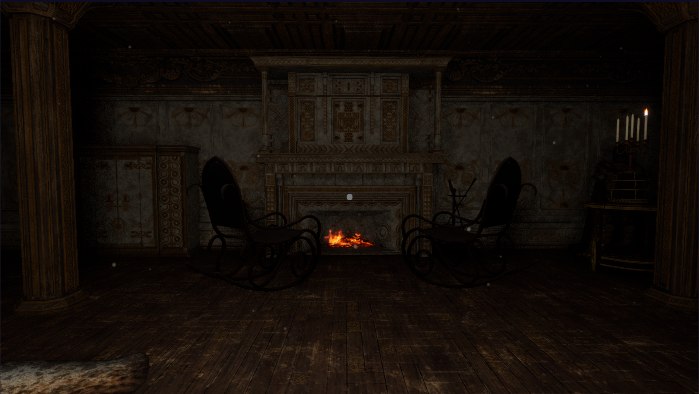

Unreal Engine 5
The Time Within
A first-person escape room project with two linked time periods, environmental puzzle logic, interactable objects, inventory-style item usage, and menu/HUD systems.
View on itch.io